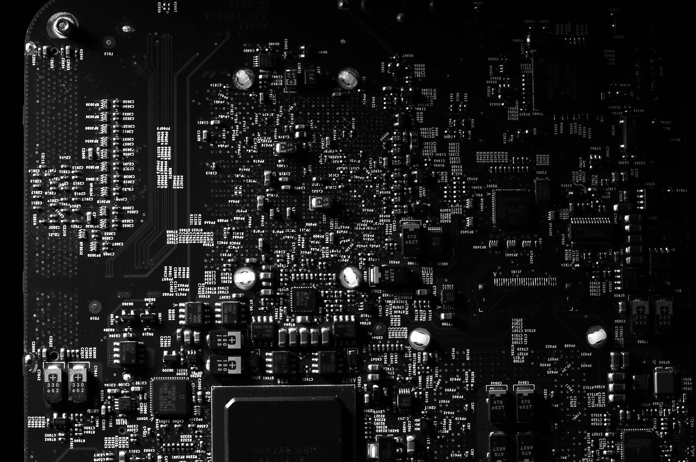

Silver gets most attention as a precious metal. But most silver mined today doesn't go into coins or investor vaults. It goes to work.
In 2023, industrial applications consumed 654 million troy ounces of silver, a record high, according to the Silver Institute's World Silver Survey 2024. That was more than half of all silver demand worldwide. Electronics, solar panels, medical devices, and industrial alloys collectively used more silver than all coins, bars, and jewelry combined.
The story of how silver became essential to modern industry spans nearly 200 years. It starts with light and a copper plate.
Key Takeaways
- In 2023, industrial silver demand reached a record 654 million ounces (Silver Institute, World Silver Survey 2024)
- Electronics account for 38% of industrial silver demand; solar energy accounts for 25% and is growing
- Photography once used 25-30% of annual silver supply; by 2023 it consumed less than 2%
- Silver's electrical conductivity, reflectivity, and antimicrobial properties have no commercially viable substitute in most applications
Silver and the Birth of Photography
Silver's industrial history begins in 1839. French inventor Louis Daguerre announced the daguerreotype process, which used silver iodide-coated copper plates to capture photographic images. Expose the plate to light, develop with mercury vapor, fix with salt solution. The result was the first practical photographic process available to the public.
For the next 150 years, film photography consumed enormous amounts of silver. At peak demand in the late 1970s, photography accounted for roughly 25 to 30 percent of total annual silver supply. Silver halide crystals embedded in film emulsions were the only practical way to record light-sensitive images at scale. Every roll of film, every X-ray plate, every photographic print required silver.
Digital photography changed that entirely. By 2010, photography's share of silver demand had dropped below 10 percent. By 2023, it accounted for just 2 percent of industrial demand according to the Silver Institute. The metal didn't disappear from film. Film itself largely disappeared. But silver's total industrial demand kept rising because other industries picked up the gap and went far beyond it.
Silver in Medicine: Properties Known for 2,000 Years
Silver's antimicrobial properties were documented before any understanding of germ theory existed. Ancient Greeks stored water and wine in silver containers to prevent spoilage. Hippocrates wrote about silver's wound-healing properties around 400 BC. Roman soldiers used silver vessels to carry water on long campaigns.
The first quantified modern medical application came in 1884 when German physician Carl Credé introduced silver nitrate drops to prevent bacterial infection in newborns' eyes at birth. The practice reduced neonatal blindness rates dramatically and was standard in hospitals across Europe and North America for decades.
Today silver's medical applications are broader and more precise. Silver-coated wound dressings are standard treatment for burns and chronic wounds because silver ions disrupt bacterial cell membranes without triggering the antibiotic resistance that plagues synthetic drugs. Catheters, surgical instruments, and HVAC systems in hospital facilities use silver coatings for the same antimicrobial reason. The World Health Organization includes silver-based water purification in its recommended strategies for developing regions where conventional treatment infrastructure is unavailable.
Why Every Circuit Board Contains Silver
Silver has the highest electrical conductivity of any element, at 6.30 times 10 to the seventh siemens per meter. Copper comes close. No other material is in the same range. That makes silver the preferred material for electrical contacts, solder paste, and conductive coatings in applications where performance matters more than cost minimization.

In 2023, electronics manufacturing consumed 248 million ounces of silver, making it the single largest industrial application according to the Silver Institute's World Silver Survey 2024. That includes conductive paste in circuit boards, contacts in switches and relays, silver-coated components in 5G base stations, and electrodes in automotive sensors used across the global vehicle fleet.
Every smartphone contains approximately 0.3 grams of silver. Every laptop contains roughly 0.7 grams. A single 5G base station requires 400 to 1,000 grams of silver for its electrical contacts and RF components. As 5G infrastructure continues expanding globally, electronics demand for silver grows with it.
Solar Panels and the Fastest-Growing Application
In 2023, photovoltaic manufacturing consumed 161 million ounces of silver, representing 25 percent of total industrial silver demand, according to the Silver Institute's World Silver Survey 2024. Solar was the fastest-growing end use in the survey, up substantially from its share just five years earlier.
Silver paste is applied to the front of solar cells to conduct electricity from the photovoltaic material to the external circuit. There is no commercially viable substitute for this function at the purity and conductivity levels modern solar cells require. A standard residential solar installation of 60 cells requires approximately 1 gram of silver. A large commercial installation of 10,000 panels requires 10 kilograms or more.
As global solar capacity expands under government renewable energy mandates and falling installation costs, this demand grows proportionally. The Silver Institute projected solar to surpass electronics as the single largest industrial end use for silver by 2024 or 2025.
What Industrial Demand Means for Silver Investors
Industrial consumption is structurally different from investment demand. Investment buyers can choose not to buy when prices rise or conditions change. Industrial manufacturers cannot. They need silver to fill orders that customers have already placed.
When industrial demand is strong and growing, it creates a floor under silver prices that speculative demand alone can't provide. The 654 million ounce industrial demand figure from 2023 isn't a one-time spike. It reflects permanent adoption in established industries plus accelerating adoption in solar and electric vehicle manufacturing.
Photography's decline from 30 percent of demand to 2 percent shows that silver applications can shrink when a technology replacement exists. But photography lost its share to digital imaging, which replaced the physical medium entirely. Electronics, solar panels, and antimicrobial medical applications have no comparable digital substitute on the horizon. The demand floor is structural, not cyclical.
Frequently Asked Questions
Which industry uses the most silver today?
Electronics is currently the largest single industrial consumer at 38 percent of industrial demand, equivalent to 248 million ounces in 2023. Solar energy accounts for 25 percent and is growing fastest. Photography, once the dominant industrial use, is now below 2 percent (Silver Institute, World Silver Survey 2024).
Is silver still used in photography?
Film photography still requires silver halide, but the market is a fraction of its historical peak. In 2023, photography accounted for just 2 percent of total industrial silver demand according to the Silver Institute. Digital photography eliminated most of the market over a 20-year period beginning in the early 2000s.
Why can't solar panels substitute copper for silver?
Copper can substitute for silver in some lower-efficiency solar cell designs, but silver paste achieves better conductivity and adhesion on the photovoltaic surface in standard and high-efficiency cell architectures including PERC and TOPCon designs. Reducing silver content per cell is an active engineering goal, but total demand rises as global installed solar capacity expands faster than per-unit silver reductions occur.
How does silver's antimicrobial use compare to its electronics use?
Medical and antimicrobial silver applications are significant but considerably smaller than electronics or solar. Silver-based wound dressings, catheters, and antimicrobial coatings are included in the "other industrial" category in Silver Institute data. Electronics and solar together account for over 60 percent of industrial demand by volume.
Will silver industrial demand keep growing?
The Silver Institute projects industrial demand to continue rising, driven primarily by solar PV expansion and EV adoption. Both sectors use more silver per unit than the consumer electronics devices they're growing alongside. Silver's structural role in modern manufacturing gives it a demand profile that differs fundamentally from most other precious metals.
Sources
- Silver Institute, "World Silver Survey 2024," retrieved 2026-06-01, silver-institute.org
- Silver Institute, "Silver in Photovoltaics," 2023, silver-institute.org
- Encyclopaedia Britannica, "Daguerreotype," retrieved 2026-06-01, britannica.com